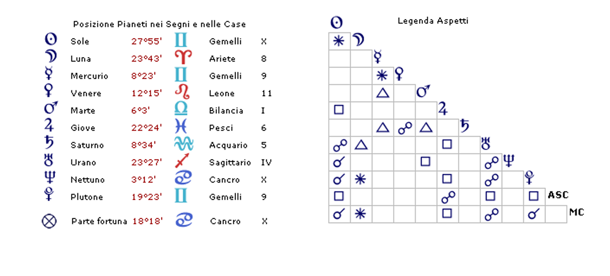

Biografie
Gustavo Adolfo Rol
Torino, 20 giugno 1903
Gustavo Adolfo Rol Nato a Torino il 20/06/1903 alle ore 12.00
Gemelli Asc Vergine

GUSTAVO ADOLFO ROL
L'enigma di un uomo oltre le categorie
Definirlo è impresa ardua, forse vana. Uomo dell'impossibile, veggente, taumaturgo, medium: nessuna etichetta riesce a contenere la complessità di Gustavo Adolfo Rol, né a rendere giustizia alla singolarità della sua esistenza. Egli stesso rifiutava con decisione qualsiasi classificazione — sensitivo, mago, illusionista — consapevole che ogni termine avrebbe ridotto a folklore ciò che percepiva come dimensione autentica dell'essere. La sua auto-percezione era quella di un individuo in costante dialogo con i piani sottili della realtà: un uomo capace di cogliere le infinite possibilità latenti nell'esistenza, profondamente radicato nella propria dimensione interiore e spirituale.
Le manifestazioni di questa sua natura erano straordinarie e documentate: dipingere a distanza, leggere volumi chiusi, materializzare oggetti dal nulla, diagnosticare e trattare patologie attraverso la percezione dell'aura e l'imposizione delle mani.
L'astrologia — nella sua accezione morpurghiana — non cessa di rivelarsi strumento di straordinaria precisione ermeneutica. Ogni volta che si analizza un tema natale con rigore e apertura, esso restituisce un ritratto fedele della persona: i tratti caratteriali dominanti, le dinamiche psicologiche ricorrenti, i settori esistenziali che più l'hanno plasmata. Il perché di tale corrispondenza rimane sul piano del mistero; ciò che è verificabile, per chiunque voglia farlo con serietà, è che il tema natale funziona.
Il nucleo astrologico del tema di Rol si manifesta con immediata eloquenza. Il Sole si colloca tra Plutone e Nettuno, in una configurazione che già da sola sintetizza l'intera parabola esistenziale di quest'uomo. Plutone — archetipo di ciò che sfugge alla percezione ordinaria, del sotterraneo, dell'occulto e del paranormale — è in congiunzione al Sole, conferendo all'identità profonda di Rol una naturale affinità con le dimensioni invisibili del reale. Questa congiunzione genera altresì un bisogno poderoso di affermazione e protagonismo, ulteriormente amplificato dal Segno dei Gemelli, che presiede all'espressione, alla comunicazione e alla messa in scena di sé.
Rol concentra in Gemelli tre pianeti (Sole, Plutone e Mercurio) e quindi, sente con forza il bisogno di esibirsi. Si tratta però di un protagonismo sui generis: non la visibilità convenzionale, bensì quella conquistata attraverso mezzi straordinari. È qui che Nettuno entra in gioco con tutta la sua potenza simbolica. Nettuno rappresenta il dissolvimento dei confini, la fede, la spiritualità, il contatto con l'aldilà e le dimensioni trascendenti. Poiché collabora con Plutone — il dominio dell' inosservabile — e con il Sole — il principio identitario — il quadro che emerge è quello di un soggetto che si afferma agli occhi del mondo precisamente attraverso ciò che sfida ogni spiegazione razionale: il soprannaturale come mezzo di comunicazione.
Questo stellium, tuttavia, non sarebbe sufficiente da solo a generare capacità di tale portata. A potenziarlo in modo decisivo interviene la Luna, collocata nell'ottava casa — la casa plutonica per eccellenza, retta dallo Scorpione e dalla sua profonda sintonia con i misteri della trasformazione e della morte. La Luna in questa sede sviluppa una straordinaria sensibilità alle dimensioni subliminali dell'esistenza, una capacità di percezione che trascende il visibile. Il sestile che essa forma con la congiunzione Sole-Plutone la potenzia ulteriormente.
Un'analisi più distesa del tema di Rol illumina le ragioni delle sue scelte di vita e la logica interna del suo messaggio. Perché un uomo consapevole di capacità così straordinarie avrebbe scelto di manifestarle attraverso il gioco, la leggerezza, lo scherzo? La risposta è scritta nelle tensioni planetarie del suo cielo natale.
Lo stellium (Sole, Plutone e Mercurio) si trova in Gemelli, un segno di natura adolescenziale e volatile, vocato allo scherzo, al teatro, alla battuta e al gioco. Mercurio — il pianeta del pensiero e della comunicazione — è anch'esso in Gemelli, ma occupa la nona casa e non fa parte dello Stellium. La nona casa è quella del pensiero elevato, della filosofia, della teologia e della ricerca spirituale: una casa strutturalmente opposta alla leggerezza geminiana. Questo dissonante posizionamento genera una tensione creativa: il mezzo comunicativo (leggero, ironico, brillante) è al servizio di contenuti densi, profondi, ultimativi. Mercurio forma inoltre un trigono esatto con Saturno in quinta casa. Saturno — principio di struttura, responsabilità e dovere — si trova nella casa del divertimento, del piacere e della creatività, un contesto nuovamente antitetico alla sua natura. Il trigono tra i due pianeti sancisce però una sintesi: il divertimento diventa veicolo del dovere, la leggerezza si fa strumento della serietà.
Quando Rol prese coscienza di quelle che egli stesso chiamava «le terribili possibilità» — la consapevolezza, cioè, di poter operare al di fuori delle leggi fisiche conosciute — la scoperta lo gettò in una crisi profonda. Ne uscì solo nel momento in cui comprese che quelle capacità non gli appartenevano come prerogativa personale, bensì come responsabilità nei confronti degli altri. Il suo fine non era il virtuosismo, ma la testimonianza: mostrare all'umanità che esistono dimensioni della realtà che eccedono la materia, che l'essere umano è costitutivamente spirituale. La leggerezza dei Gemelli e della quinta casa era lo strumento scelto per rendere accessibile — e non oppressivo — un messaggio di tale portata. Il dovere saturnico e la profondità della nona casa ne erano il fondamento etico.
Per comprendere il percorso spirituale di Rol, è necessario esaminare Marte in prima casa. Marte è per natura impulsivo, aggressivo, assertivo — e in prima casa tende a colorare l'intera personalità di queste qualità. Ma Rol ha Marte in Bilancia, il segno del suo esilio, esattamente opposto all'Ariete che governa. In Bilancia, Marte agisce per senso di giustizia, nel rispetto dell'altro, temperando l'impulso nell'etica relazionale. È il segno più profondamente sociale dello zodiaco — non nel senso della socievolezza, ma dell'orientamento strutturale verso l'alterità.
I trigoni di Marte con Saturno in Acquario (quinta casa) e con Mercurio in Gemelli (nona casa) rafforzano questa caratterizzazione: l'azione è intellettualizzata, filtrata dal pensiero spirituale, alleggerita dalla simpatia geminiana. L'Acquario — segno antisolare per eccellenza — porta moderazione, ideali e universalismo; Marte forma poi un quadrato con Nettuno in Cancro e decima casa. Un quadrato è un aspetto di tensione, di conflitto irrisolto: l'azione, in questo caso, diventa anche sacrificio. Rol stesso dichiarò esplicitamente di aver dovuto rinunciare all'orgoglio, all'ambizione e al denaro per poter esercitare le proprie «possibilità». Nettuno colora l'agire di sensibilità, compassione e disposizione al dono — ma al costo di un continuo abbandono dell'ego. Nel tema di Rol, Nettuno risulta dominante sul piano dell'azione: egli non si imponeva agli altri per carisma o forza, ma per profondità intellettuale, coerenza etica e sensibilità emotiva. La congiunzione Sole-Nettuno sigilla questa prevalenza, tornando con forza sul tema della spiritualità come asse portante dell'identità.
Particolarmente stimolato nel tema di Rol risulta Urano, collocato in Sagittario e quarta casa. Esso è in opposizione allo stellium Plutone-Sole-Nettuno in decima casa, in quadrato a Giove in Pesci e settima casa, e in trigono esatto alla Luna in Ariete e ottava casa. Questa rete di aspetti rivela dinamiche esistenziali di grande rilevanza.
Nei primi anni della sua vita adulta, Rol accettò a malincuore l'impiego presso la banca di cui il padre era direttore, imponendo come unica condizione di operare in una filiale estera. Il legame filiale lo trattenne in quell'ambiente fino alla morte del padre, nel 1934, quando Rol aveva trentuno anni. Urano in quarta casa (la famiglia, le radici, il padre) in opposizione allo stellium in decima (la vocazione, la realizzazione pubblica) descrive con precisione questa tensione: la costrizione familiare che rallentava e frenava la piena espressione di sé.
La posizione di Giove in settima casa in Pesci amplifica la sensibilità relazionale di Rol, rendendolo emotivamente vorace e fortemente sentimentale nei legami. Ma il quadrato di Giove con Urano introduce un elemento di conflitto nella dimensione coniugale: la moglie Elna, persona di natura riservata e tendenzialmente solitaria, mal sopportava l'invasione costante della casa coniugale da parte di estranei, inevitabile conseguenza dell'attività di Rol. L'opposizione di Saturno a Venere (collocata in Leone nella tiepida undicesima casa) rivela ulteriore complessità: Venere in Leone cerca calore, ammirazione e reciprocità appassionata, ma è frenata da Saturno dalla quinta e costretta a misurarsi con un amore rarefatto, moderato, non corrispondente ai suoi bisogni. Questo aspetto è tradizionalmente associato a difficoltà nella sfera procreativa — e Rol ed Elna, difatti, non ebbero figli. Eppure, nonostante le tensioni, il matrimonio resistette fino alla morte di lei, in tarda età.
L'astrologia morpurghiana, applicata al tema natale di Gustavo Adolfo Rol, restituisce il ritratto di un uomo profondamente coerente nella sua contraddizione apparente: un'identità plasmata dall'invisibile (Plutone-Sole), un'anima aperta all'ultraterreno (Luna in ottava, Luna sestile Plutone), una vocazione spirituale che sceglie deliberatamente il linguaggio del gioco (Gemelli, quinta casa) per comunicare verità di peso metafisico (nona casa, Saturno). Un uomo che agisce per giustizia e sacrificio (Marte in Bilancia, quadrato Nettuno), che porta nella sfera pubblica ciò che la dimensione familiare avrebbe voluto trattenere (Urano quarta-decima).
Rol rimase un mistero per tutti coloro che lo frequentarono. L'astrologia non pretende di svelarlo — nessuna disciplina potrebbe. Ma offre una mappa simbolica della sua struttura interiore: uno strumento per avvicinarsi, con rispetto e meraviglia, all'enigma di un uomo che ha scelto l'impossibile come proprio territorio.